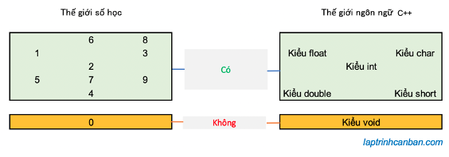
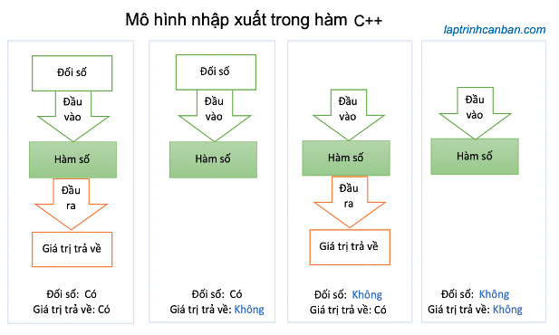

Cùng tìm hiểu về void trong C++. Bạn sẽ học được khái niệm void trong C++ là gì, cách sử dụng lệnh void trong C++, cách dùng hàm void trong C++ cũng như con trỏ void trong C++ sau bài học này.
void trong C++ là gì
Kiểu dữ liệu void trong C++
Giống như C thì ngôn ngữ C++ cũng bị chi phối bởi các kiểu dữ liệu. Những đối tượng sử dụng trong chương trình như biến hay hàm đều có kiểu dữ liệu của riêng nó, và được quản lý chặt chẽ bởi thông tin có trong kiểu dữ liệu được chỉ định.
Trong những kiểu dữ liệu của C++, thì có một kiểu dữ liệu vô cùng đặc dị, đó chính là kiểu dữ liệu void. Đặc dị bởi vì ý nghĩa và cách sử dụng của nó hoàn toàn khác so với các kiểu dữ liệu còn lại trong C++.
Để có thể lý giải cặn kẽ về kiểu dữ liệu void, bạn phải có hiểu biết vững chắc về kiểu dữ liệu trong C++.
Thông tin bằng ngôn ngữ C++ được quản lý dưới dạng các kiểu dữ liệu
Trong ngôn ngữ C++, loại thông tin xác định “hình dạng” của các biến và hàm sử dụng trong chương trình được gọi là kiểu dữ liệu. Kiểu dữ liệu sẽ giúp chúng ta xác định kích thước của thông tin và loại thông tin.
Các kiểu dữ liệu điển hình trong ngôn ngữ C++ là kiểu char, kiểu int và kiểu float. Bạn có thể tìm hiểu chi tiết về chúng tại bài viết dưới đây:
- Xem thêm: Kiểu dữ liệu trong C++
void trong C++ là một kiểu dữ liệu
Như đã nói thì void trong C++ là một kiểu dữ liệu.
Vậy thì ý nghĩa void trong C++ là gì? void là một kiểu dữ liệu, do đó nó cũng thể hiện kích thước của thông tin và loại thông tin của đối tượng sử dụng nó. Tuy nhiên thì nó hoàn toàn khác những kiểu dữ liệu khác bởi vì:
void là kiểu dữ liệu biểu thị trạng thái không tồn tại kiểu dữ liệu.
Một kiểu dữ liệu biểu thị trạng thái không tồn tại kiểu dữ liệu? Nghe có vẻ như ngôn tình ấy nhỉ. Nhưng thực tế đó chính là ý nghĩa void trong C++.
Trong tiếng Anh “void” có nghĩa là “không hợp lệ, không tồn tại, tưởng tượng”. Kiểu void chính xác là kiểu chỉ ra rằng không tồn tại kiểu dữ liệu .
Không tồn tại kiểu dữ liệu nghĩa là gì?
Việc một dữ liệu lại không tồn tại kiểu dữ liệu là một việc vô cùng kỳ lạ. Tuy nhiên thì ý nghĩa của nó cũng dễ hiểu thôi, ví dụ đối với cuộc sống của chúng ta thì không tồn tại kiểu dữ liệu cũng giống như ý nghĩa của số 0 vậy.

Trong thế giới con người, số 0 được sử dụng để biểu thị trạng thái không có gì. Một cách tương tự thì trong thế giới ngôn ngữ C++, kiểu void được sử dụng để biểu thị trạng thái của một dữ liệu mà không tồn tại kiểu của nó.
Bằng cách tạo ra kiểu void, chúng ta có thể thể hiện tình huống đặc biệt khi dữ liệu “không tồn tại kiểu” . Đây là tầm quan trọng của sự tồn tại của kiểu void trong C++.
Lệnh void trong C++
Để sử dụng void trong C++, chúng ta cần sử dụng câu lệnh để biểu diễn nó. Lệnh void có thể sử dụng bằng cách ghi trực tiếp nó tại chỗ mà chúng ta muốn sử dụng.
void
Thông thường, có 2 trường hợp chúng ta sử dụng lệnh void trong C++ như sau:
Sử dụng lệnh void trong khai báo hàm
Lệnh void thường được sử dụng trong khai báo hàm, và có tác dụng chỉ định kiểu giá trị của đối số cũng như của giá trị trả về từ hàm. Nếu kiểu giá trị là void, thì điều đó có nghĩa là không có đối số truyền vào hàm, hoặc là không có giá trị trả về từ hàm.
Ví dụ cụ thể, hàm sau đây sử dụng void với ý nghía không có đối số truyền vào hàm:
double getPI(void){ |
Tuy nhiên thông thường chúng ta hay lược bỏ void khi cần khai báo một hàm mà không có đối số truyền vào hàm đó.
Chúng ta sẽ tìm hiểu cụ thể hơn về void trong hàm ở phần dưới.
Sử dụng lệnh void trong con trỏ void
Lệnh void cũng được sử dụng trong con trỏ void. Tương tự thì nó cũng được dùng để chỉ định kiểu của con trỏ. Và khi một con trỏ thuộc kiểu void, điều đó có nghĩa là có thể truy cập đến địa chỉ của dữ liệu mà con trỏ chỉ đến, nhưng không xác định được kiểu dữ liệu ở đó.
void * pdata; |
Chúng ta sẽ tìm hiểu cụ thể hơn về void trong con trỏ ở phần dưới.
Hàm void trong C++
Kiểu void trong C++ thường được sử dụng trong hàm, và có tác dụng chỉ định kiểu đối số của hàm và kiểu giá trị trả về. Và hàm sử dụng kiểu void trong nó được gọi là hàm void trong C++.
Kiểu đối số của hàm và kiểu giá trị trả về là gì
Trong bài hàm trong C++ chúng ta đã biết hàm trong C++ là một tập hợp các xử lý nhằm thực hiện một chức năng cụ thể nào đó trong chương trình. Nói cách khác thì chúng ta nhập một thông tin (đối số) vào hàm, thông tin này sẽ được xử lý trong hàm, và hàm sẽ xuất lại một thông tin (giá trị trả về) cho chúng ta sau khi hàm kết thúc.
Việc nhập và xuất trong hàm có thể được chọn lần lượt từ việc [có thông tin] và [không có thông tin]. Nói cách khác thì chúng ta có thể lựa chọn thông tin nhập xuất từ 1 trong 4 trường hợp như sau:

Và trong các trường hợp nhập xuất ở trên, [kiểu void] được sử dụng như một kiểu dữ liệu để chỉ ra rằng đầu vào và đầu ra không tồn tại trong hàm.
Sử dụng void trong hàm C++
Chúng ta có 4 cách sử dụng void trong hàm C++ khác nhau tương ứng với 4 trường hợp đầu vào và đầu ra của đối số và giá trị trả về như ở trên.
Hãy cùng xem ví dụ cụ thể trong từng trường hợp sử dụng void trong hàm C++ dưới đây:
Trường hợp 1: Có cả đối số và giá trị trả về thì không dùng void
int sum(int num1, int num2){ |
Trường hợp 2: Có đối số nhưng không có giá trị trả về thì dùng void cho giá trị trả về
void printNum(int num){ |
Trường hợp 3: Không có đối số nhưng có giá trị trả về thì dùng void cho đối số
double getPI(void){ |
Chúng ta cũng có thể lược bỏ void trong trường hợp hàm không có đối số kiểu này như sau:
double getPI(){ |
Trường hợp 4: Không có cả đối số và giá trị trả về thì dùng void cho cả đối số và giá trị trả về
void Hello(void){ |
Chúng ta cũng có thể lược bỏ void trong trường hợp hàm không có đối số kiểu này như sau:
void Hello(){ |
Con trỏ void trong C++
Để tìm hiều về con trỏ void trong C++, trước hết bạn cần phải nắm vững các kiến thức cơ bản về con trỏ void. Đừng lo lắng vì Kiyoshi đã chuẩn bị cho bạn trong các bài viết sau đây:
- Xem thêm: Con trỏ trong C++ là gì
- Xem thêm: Con trỏ của con trỏ trong C++
Con trỏ void trong C++ là gì
Trong số các kiểu con trỏ, bạn có thể xác định một con trỏ hơi khác thường được gọi là con trỏ void.
Giống như các loại con trỏ khác trong C++ thì con trỏ void cũng được sử dụng để lưu trữ địa chỉ của một dữ liệu trong bộ nhớ máy tính.
Tuy nhiên điều đặc biệt ở đây là, với kiểu dữ liệu mà con trỏ void lưu giữ địa chỉ thì chương trình có thể truy cập đến địa chỉ của dữ liệu đó, nhưng không xác định được kiểu của nó. Nói cách khác thì con trỏ void được sử dụng để lưu giữ địa chỉ của các kiểu dữ liệu không tồn tại kiểu dữ liệu.
Khai báo con trỏ void trong C++
Cách khai báo con trỏ void trong C++ cũng tương tự như với các loại con trỏ khác, chúng ta viết kiểu void, rồi dấu hoa thị *, và cuối cùng là tên con trỏ void như sau:
void * pdata; |
Cách viết này cũng tương tự như với các kiểu con trỏ int hay char chẳng hạn:
char * pCharData; // Con trỏ kiểu char |
Chúng ta cũng có thể thực hiện các thao tác như gán địa chỉ vào con trỏ, hoặc là in địa chỉ được gán vào con trỏ void tương tự như các loại con trỏ khác trong C++. Ví dụ:
|
Tuy nhiên, không giống như với các kiểu con trỏ khác thì chúng ta lại không thể thực hiện các thao tác với giá trị của biến mà con trỏ void trỏ đến, và vì thế cũng không thể biết được kiểu của dữ liệu đó là gì. Ví dụ, chúng ta không thể đọc được giá trị của biến thông qua con trỏ, vì lỗi sau đây sẽ xảy ra:
|
Vậy chẳng phải con trỏ void trong C++ rất là vô dụng hay sao? Tất nhiên là không phải rồi, vì chúng ta sẽ cần tới con trỏ void trong các trường hợp như dưới đây:
Sử dụng con trỏ void trong C++
Con trỏ void trong C++ sẽ được sử dụng trong các trường hợp đặc biệt sau đây:
- Con trỏ vạn năng giúp lưu giữ tất cả các loại giữ liệu trong C++
Một điều dễ hiểu là do con trỏ void không tồn tại kiểu của dữ liệu mà nó đang chỉ đến, nên nó có khả năng chấp nhận và lưu giữ địa chỉ của tất cả các loại giữ liệu khác nhau trong C++. Đây là điều mà các con trỏ khác trong C++ không làm được. Ví dụ như con trỏ kiểu int thì chỉ chấp nhận lưu địa chỉ của dữ liệu kiểu int, còn con trỏ kiểu char thì cũng chỉ có thể chấp nhận lưu giữ địa chỉ của kiểu giữ liệu char. Nhưng với con trỏ void, void chấp hết ^_ .
Ví dụ cụ thể, con trỏ void trong C++ dưới đây có thể lưu giữ địa chỉ của tất cả các loại giữ liệu mà không sợ lỗi xảy ra trong chương trình.
|
- Con trỏ giúp cố ý ẩn kiểu dữ liệu
Vì con trỏ C++ không cho phép chúng ta đọc kiểu dữ liệu cũng như truy cập vào dữ liệu tại địa chỉ mà nó lưu giữ, nên con trỏ void có vai trò vô cùng quan trong khi chúng ta muốn ẩn kiểu dữ liệu nào đó trong chương trình.
Đây là một thuật toán vô cùng phức tạp đòi hỏi lượng kiến thức khá cao, chỉ dành cho các bạn thực sự pro và muốn tìm hiểu sâu về C++ mà thôi.
Tổng kết
Trên đây Kiyoshi đã hướng dẫn bạn về void trong C++ rồi. Để nắm rõ nội dung bài học hơn, bạn hãy thực hành viết lại các ví dụ của ngày hôm nay nhé.
Và hãy cùng tìm hiểu những kiến thức sâu hơn về C++ trong các bài học tiếp theo.
URL Link
https://laptrinhcanban.com/cpp/lap-trinh-cpp-co-ban/ham-trong-cpp/void-trong-cpp/
HOME › lập trình c++ cơ bản dành cho người mới học lập trình>>11. hàm trong c++